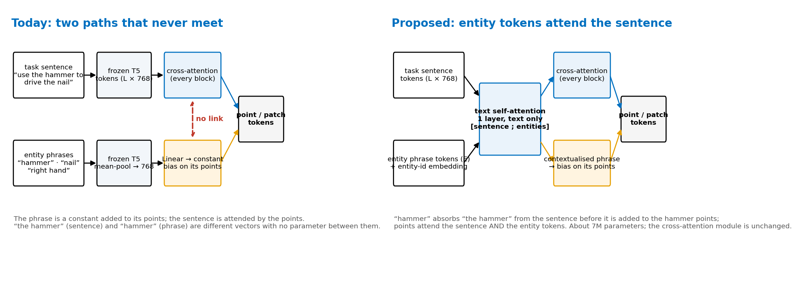
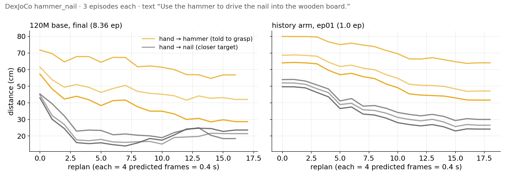
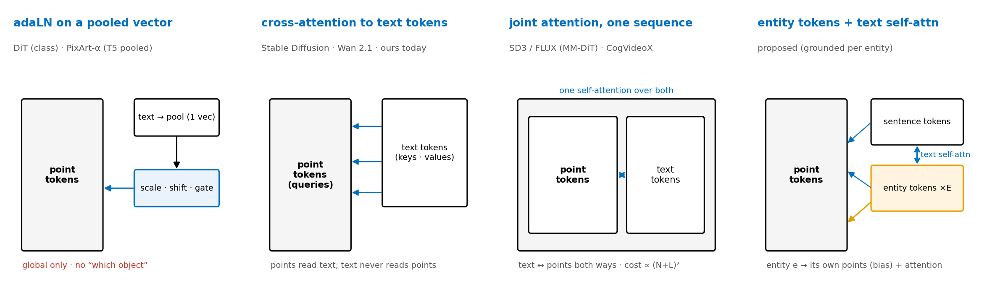
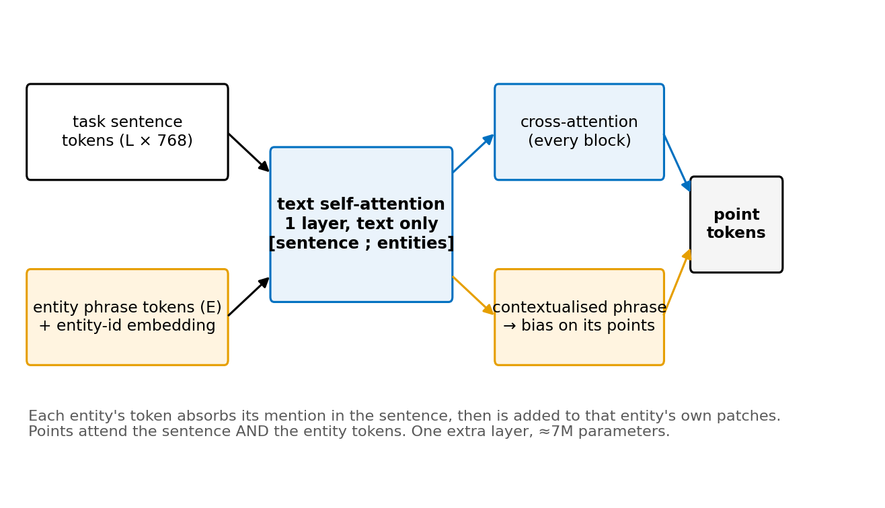
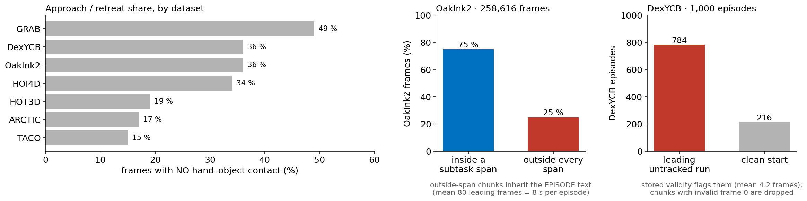
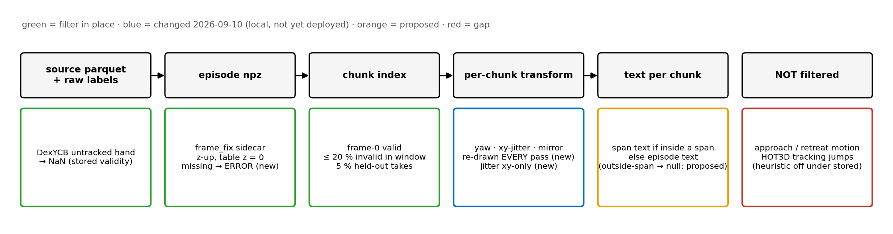

Deck #2-3: Method — Text Conditioning and Data Filtering
3D-WAM · season 2 · what the audit changed, and the structure the next experiments use
Lab meeting
2026. 09. 10
Presented by 김범준
Overview
[TL;DR] Text reaches points as a pooled constant; two objects cannot be told apart
- Done: audit fixes, tests green
- Propose: entity tokens attend text
- Decide: z frame, approach frames

sources: code-iclr27/wam/model/vdit_c.py (CrossAttention, entity bias) · wam/data/text.py · audits 2026-09-10 (RUN.md 17:35–18:35) · numbers: season2/reads, manifests_final, text_spans
Method (1): how text is conditioned today, step by step
Sentence is attended; phrases are a per-patch bias; the two never meet
| step | what happens |
|---|---|
| 1 sentence | frozen T5-base → tokens (L × 768), kept as a sequence |
| 2 phrase | one phrase per entity (“hammer”) → T5 → mean-pool → 768 |
| 3 bias | Linear → added to every patch of that entity, all frames |
| 4 cross-attn | every block: patches attend the sentence tokens |
| 5 link | none — “the hammer” and “hammer” share no parameter |
| 6 evidence | text swap moved flow 2–6 mm (P4); hammer_nail → nail (right) |

step 3: vdit_c.py `x = content + (cond + e)` with e gathered per patch · step 4: CrossAttention(ctx = sentence tokens) · P4 = 08-26 text-swap probe on pilot_fast · hammer_nail reads: measlat/final, reads/c2b_hist/ep01
Method (2): how multimodal generators condition on text
Standard practice puts text and content tokens in one attention
- Pooled adaLN: global only
- Cross-attn: content reads text
- Joint attention: both ways

refs verified in paper/related/05: DiT arXiv 2212.09748 · SD3 (MM-DiT) 2403.03206 · CogVideoX 2408.06072 · Wan 2503.20314 · HunyuanVideo 2412.03603 · Stable Diffusion (Rombach 2022) and PixArt-α cited from memory, verify before the paper
Method (3): proposed — entity tokens that attend the sentence
Phrases join the text sequence; the bias becomes sentence-aware
- One text self-attention layer
- ctx = [sentence ; entities]
- Bias from the contextualised phrase
| design | text↔entity | grounding | cost |
|---|---|---|---|
| ours today | none | pooled bias | 0 |
| joint attention (MM-DiT) | full | none, global | (N+L)²/block |
| Dex Point Policy obj token | n/a | 1 token / object | +E tokens |
| proposed | 1 layer | bias + attention | ≈7M, 1 layer |

Dex Point Policy row from the owner's description (a separate object token from the object cloud, `use_object_cond`) — not re-verified from DPP code on this Mac · the proposed change reuses CrossAttention unchanged: ctx construction + one layer + the gather source (≈30 lines)
Method (4): data — phrases, spans and approach frames
OakInk2 phrases say “object”; a quarter of its frames carry the wrong text
- Approach frames are trained
- Span-outside chunks inherit episode text
- DexYCB parked hands are filtered

phrase rule (wam/data/text.py object_phrase): taco = tool word · dexycb = YCB name · arctic = object · grab = object · hot3d = instance name · oakink2 = literal “object” (opaque ids) · contact-free % from manifests_final contact_frames_frac · spans from text_spans/{oakink2,hot3d}.json · DexYCB from motion_valid.npz (stored validity)
Method (5): data filtering — what is in place, what changed, what is not filtered
Tracking failures are filtered; real approach motion is not
- Stored validity from source flags
- Augmentation re-drawn per pass
- Approach trim is a decision

changed 09-10 (tests 269 pass): augmentation keyed on (seed, chunk, pass) · resume offsets RNG and order by step · origin jitter xy-only · frame_fix sidecar missing → error · contact-map hand rows not double counted · iroll NaN hold · pooler splits GR-1 by hands
Method (6): EPIC-Contact as training data or as a tool
Correspondence annotations we want; not a motion corpus
- Bijective contact = our target label
- 62K frames ≈ 20 min
- Camera space, stable grasps only
| fact | value |
|---|---|
| clips / frames | 2.3K / 62.3K |
| objects | 9 kitchen categories, template meshes |
| contact | dense bijective hand↔object, 3,106-vertex MANO |
| frame | camera space, no gravity / table |
| clips are | stable-grasp only (no approach / release) |
| license | CC BY-NC 4.0 |
sources: arXiv 2606.30598 (ECCV 2026) · huggingface.co/datasets/Sid2697/epic-contact · github.com/Sid2697/HOPformer · full analysis lands in the appendix when the agent finishes
Discussion & Action items
Three decisions gate the next launches; the code for each is small
Decided:
- Audit fixes go into every NEW launch; running arms keep their code (owner, 18:35)
Discussion:
- z convention — A mixed · B anchored flag · C all hand-centred · D table z, drop HOI4D+HOT3D → D first, then B (owner)
- text structure — bias-only · joint attention · entity tokens + 1 text layer → entity tokens, after a phrase-swap read (owner)
- approach frames — as is · null text outside spans · trim before first contact, keep 1 s → null text + trim (owner)
Action items:
- Base 120M re-run, per-pass augmentation only — re-tests the overfitting headline (A1 · next free 4-GPU slot)
- Entity-token text layer + tests, behind a config flag (A2 · agent · 09-11)
- OakInk2 phrases from sentence nouns; outside-span chunks → null text (A3 · agent · 09-11)
arms live now: history 12201 → 12258 (iclr27) · contact aux + batch continuation (MLXP 2× H200) · results deck = #2-2 · this deck = method for the next experiments
Appendix A1 · evidence and code paths
| text path | code-iclr27/wam/model/vdit_c.py: CrossAttention (ctx = sentence tokens) · `ent = self.entity(entity_emb)` · `x = content + (cond + e)` · phrases: wam/data/text.py object_phrase / hand_phrase / entity_phrases · cache: scripts/cache_text_embeddings.py (pool=True for phrases) |
| text-swap probe | 08-26 P4 on pilot_fast_N1024 ckpt 6k: relabelled text changed generated flow by 2–6 mm (memory 3d-wam-project.md) |
| hammer_nail | season2/measlat/final/dexjoco/results.json (120M final) · season2/reads/c2b_hist/ep01/dexjoco/results.json · replan_log[hand_obj_dist_cm, hand_obj2_dist_cm] · phrases hit the T5 prompt cache exactly (text_note) |
| filters | wam/data/motion_filter.py (source=stored, chunk_keep_mask: frame-0 valid, ≤ 20 % invalid) · wam/data/sources/chord_parquet.py raw_untracked_frames (DexYCB pose_m == 0) · wam/data/chunks.py attach_text_spans (fallback = episode text) |
| audit fixes 09-10 | wam/data/dataset.py (pass_no, aug key, xy jitter, frame_fix error) · wam/train/loaders.py (BucketBatchSampler.set_epoch/_stamp, start_step) · wam/train/train_v_c.py (data_pass, resume seed) · wam/train/contact_map.py (pad_ok) · review-iclr27/train/iroll.py (NaN hold) · tests: test_dataset.py::test_augmentation_is_redrawn_per_pass, test_bucket_sampler.py::test_set_epoch_stamps_pass_into_indices_and_reseeds_aligned_keys |
| audit reports | season2/RUN.md 2026-09-10 17:35–18:35 (three read-only audits: frames · model/loss/trainer · data/eval — the third died on a rate limit and was not re-run) |
All local: /Users/beomjun/claude-code-rc/3D-WAM · nothing here was deployed to a cluster training tree; the pooler (review/train/mpepe.py) is the only deployed change
Appendix A2 · coordinate-frame audit, what was cleared and what was not
| cleared | per-chunk origin = hand centroid xy, z = table plane when anchored; identical in training (dataset.py 430–460), iroll (126–137), GR-1 loop (686–697), DexJoCo loop (404–417) · history (t−1, t−2) same origin, consumed as hist − x0 · one global pos_scale restored from the checkpoint · labels remap and phrase order agree · mirror swaps side labels + phrases; no task text contains left/right · float16 storage ulp ≤ 1 mm |
| design inconsistency | z means table height on anchored datasets (76 % of the mixture) and hand-centred height on HOI4D + HOT3D (24 %); no input tells the model which; closed loops always send table z → decision 1 above |
| fixed | 3-D jitter ball (1 m) on un-anchored episodes → xy only · iroll fed NaN for untracked frames → held · missing frame_fix sidecar fell back silently → error |
| fragile | closed-loop table_z = support under the pick object (a fixture would offset the frame) · iroll keeps the frame-0 point set for the whole chain |
verification numbers to compute before the z decision: per-dataset histogram of hand-centroid z in train chunks; teacher-forced ADE on anchored val with the z origin shifted ± 0.2 m
Appendix A3 · cut list
cut: per-dataset phrase table (rule in the Method (4) footnote) · full list of the 80 remaining ruff findings (36 one-line semicolons, 9 loop-variable closures in iroll, 8 open() without context manager …) · the third audit (data pipeline / eval) — not run, rate limit · Play2Perfect and correspondence specs (season2/specs/) — separate decks when launched